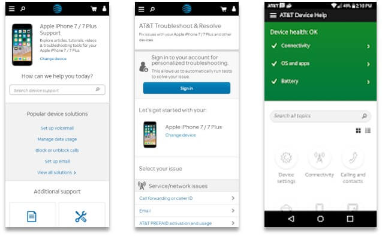

I've focused on growing customer use of online support solutions by understanding and addressing their needs, improving usability, and monitoring feedback and usage patterns. Site enhancements are delivered in partnership with UX design and agile development teams. I'm also involved in content strategy and management, including overseeing writers, SMEs, and vendors content production efforts, and coordinating with producers and delivery teams to deploy content.
The Device Support ecosystem supports customers and call center agents with:
- searchable content like step-by-step tutorials, videos, and user guides
- workflows to troubleshoot and resolve network, account, hardware, software, or other issues
- an Android app with the above plus some added diagnostics
